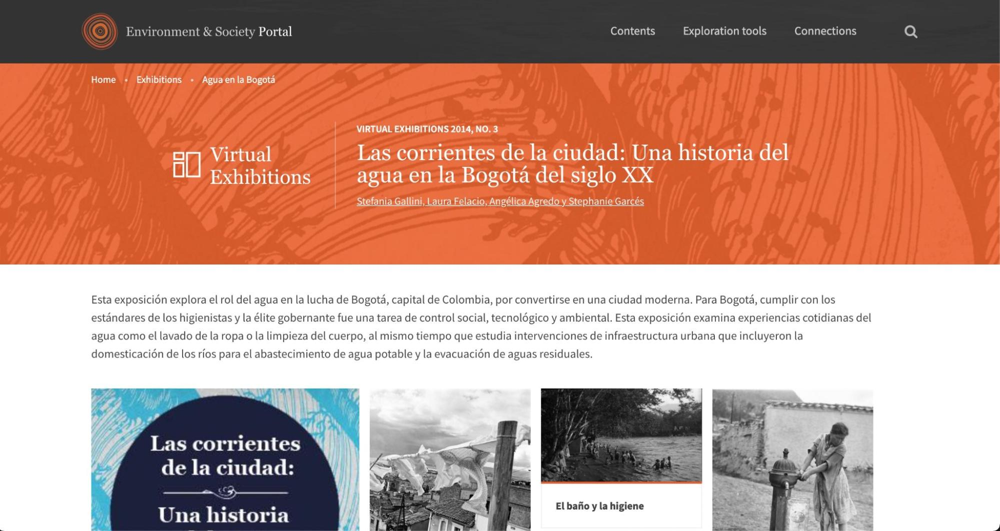
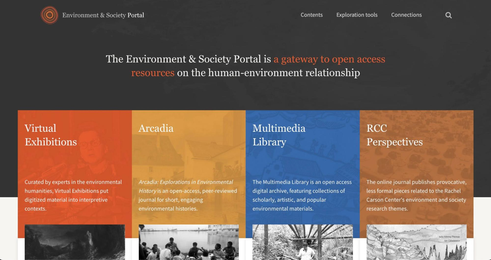
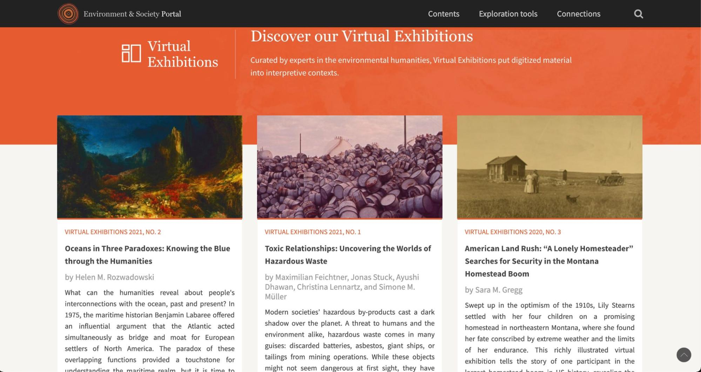
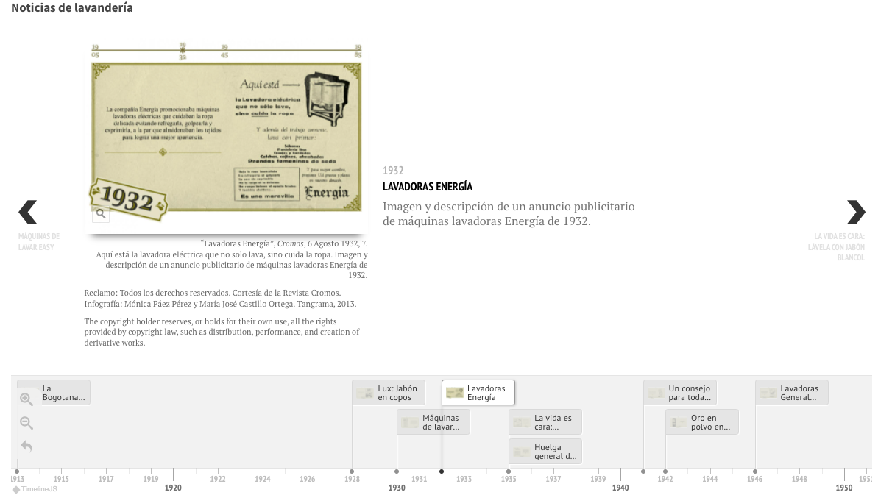

Ejemplo de aplicación de la guía de buenas prácticas

- introducción
- recomendaciones
- el proyecto
- información de los responsables
- documentación del recurso
- aspectos técnico-académicos
- propiedad intelectual y condiciones de uso
- visibilidad y difusión
- acceso y sustentabilidad
Este es un ejemplo de aplicación de la guía de buenas prácticas para la elaboración y evaluación de proyectos de Humanidades Digitales y checklist en un proyecto concreto: Las corrientes de la ciudad: Una historia del agua en la Bogotá del siglo XX
Introducción
Esta guía proporciona lineamientos para ayudar a que los comités de evaluación tomen en consideración los productos digitales como resultados de investigaciones, así como orientar a los creadores de recursos digitales a los distintos elementos que deben incluir sus recursos con el objetivo de incrementar la calidad editorial de sus proyectos. La guía, además, se acompaña con un checklist que permite a los interesados llenar una serie de preguntas para evaluar cómo los proyectos de Humanidades Digitales cumplen con los lineamientos.
Al proceder con la evaluación, debemos tener en cuenta que cada proyecto tiene su propia naturaleza; por lo que no podemos encontrar las mismas características en, por ejemplo, un proyecto de colección de imágenes que en uno que desarrolla software. Ambos tienen cabida dentro de los proyectos de Humanidades Digitales, sin embargo, tendrán necesidades, características y se presentarán de forma distinta. Es por ello que el uso de la Guía como checklist para evaluar proyectos se debe aplicar con ojo crítico, pero también con conocimiento y revisión detallada del recurso a evaluar.
No existe un modelo único para evaluar proyectos de Humanidades Digitales, tampoco existe una guía única para desarrollar proyectos digitales. La "guía de buenas prácticas" es una herramienta que considera la mayoría de los elementos necesarios para desarrollar o evaluar proyectos de Humanidades Digitales, pero no es un instructivo que se deba seguir paso a paso.
Recomendaciones

-
Se recomienda leer cuidadosamente las descripciones de cada una de las secciones de la guía, ya que en ellas se explica la intención de cada apartado y permite buscar las respuestas y, sobre todo, cómo interpretarlas respetando el objetivo del proyecto evaluado.
-
La información del proyecto no necesariamente se encuentra en orden, por lo que hemos de navegar dentro del recurso para poder responder las preguntas de la guía.
-
Las secciones de la guía son directrices, los proyectos pueden usar otros nombres para presentar la misma información ("acerca de", "el proyecto", "presentación", entre otros).
-
Las secciones que recomienda la guía pueden presentarse como una sección única en el proyecto a evaluar. Por ejemplo, en la misma sección pueden estar presentes la descripción del proyecto y la información de los autores.
-
Se recomienda usar tres posibles respuestas para cada una de las preguntas (sí , no , no aplica ).
El proyecto
Las corrientes de la ciudad es una exhibición virtual que forma parte del The Environment & Society Portal , el cual es a su vez, una interface para recursos de acceso abierto relacionados con la interacción entre la sociedad y el medio ambiente. Es un repositorio de recursos digitales de diferentes tipos: la revista Arcadia, exhibiciones virtuales, una biblioteca multimedia y una publicación periódica de divulgación del Centro Rachel Carson.
Para comenzar con la evaluación de Las corrientes de la ciudad, debemos recorrer primero The Environment & Society Portal y entenderlo como un agregador de contenidos a los cuales se les ha realizado una curaduría previa. Es decir, es tanto un servicio que provee una plataforma de publicación como un equipo que valora los contenidos allí exhibidos. Una vez recorrido el portal principal, hemos de ir a la sección exhibiciones virtuales. Allí veremos que se alojan una serie de proyectos, entre ellos Las corrientes de la ciudad. La descripción de la sección indica que estas exhibiciones tienen como objetivo publicar materiales digitalizados en "contextos interpretativos", es decir, que no solamente se ponen a disposición del público, además se les organiza de manera narrativa.
Las corrientes de la ciudad es un proyecto de humanidades digitales en sí mismo, el cual involucró la digitalización, la organización y la presentación de contenidos en una forma narrativa. Pero es fundamental entender que la manera en la cual se dirige la exhibición está orientada por la infraestructura tecnológica dispuesta por el sitio que aloja el proyecto: The Environment & Society Portal.
Esto no es algo excepcional. De hecho es bastante común en las humanidades digitales que los proyectos aprovechen la infraestructura puesta a disposición por instituciones u organizaciones para la publicación de contenidos. Un ejemplo destacado de lo anterior está representado por la plataforma OpenEdition, desarrollada por el Centre national de la recherche scientifique (CNRS).
Información de los responsables
- ¿Es evidente quién o quiénes son responsables del recurso?
- ¿Es evidente el papel que desempeñó cada uno de ellos?
- ¿Incluye la adscripción de los mismos y, en su caso, país?
- ¿Está indicada qué institución o instituciones participaron en el proyecto?
La información relacionada con las autoras del proyecto se encuentra en la sección "autoras". El enlace a la sección no es muy evidente. Se debe dar clic a la lista de nombres que aparece bajo el título en la página de inicio. También se puede acceder a la información sobre cada autora desde el widget "about the authors" que está disponible en cada página de la exhibición.
Cada recurso de imagen e interactivo comprende sus respectivos responsables de elaboración y la licencia de uso correspondiente. Como es el caso de esta línea de tiempo, realzada por Mónica Páez Pérez y María José Castillo Ortega:
En la introducción se resalta el aspecto multidisciplinario que implicó la realización del proyecto, que involucró diversas experticias para construir la obra en su conjunto. Entre las áreas que se mencionan están "diseñadores gráficos, arquitectos, cartógrafos, músicos y traductores". De manera detallada, puede descubrirse el rol de cada participante en el proyecto en la sección "agradecimientos".
Documentación del recurso
- ¿Es explícita la temporalidad del proyecto (fecha de creación, actualización y en su caso conclusión)?
- ¿Es posible entender del sitio, cuál es el propósito y los objetivos del recurso?
- ¿Está claro a qué público está dirigido el recurso y quiénes tienen acceso a él?
- ¿Está claro para qué y cómo puede ser utilizado el sitio?
- ¿Es evidente qué material se presenta y qué criterios se utilizan para su inclusión?
- ¿Es claro si el recurso está finalizado o si se le continuará añadiendo materiales?
La documentación del recurso está limitada a sus contenidos, de los cuales se indica origen, metodología para su creación, objetivos, formas de uso, entre otras. La documentación relacionada con los aspectos técnicos multimediales y de la construcción de la exhibición no hacen parte del proyecto.
Al ser un producto final, la temporalidad queda definida por su fecha de publicación, pero no es explícita la fecha de inicio del proyecto. Por otra parte, es evidente que la asignación de un número único para objetos digitales (DOI) representa una compleción del proyecto, por lo que no se manifiesta ninguna actualización.
Aspectos técnico-académicos
- ¿Está enunciado el mecanismo académico de validación (por ejemplo, comité editorial, proceso de arbitraje, revisión de pares, consejo interdisciplinario o algún otro mecanismo de control de calidad)?
- ¿Se utilizaron directrices para la elaboración del recurso, tales como: guía de buenas prácticas, listas de control o estándares?
- ¿Existen mecanismos de autoevaluación en forma de indicadores públicos o internos?
- ¿Existen mecanismos de retroalimentación, tales como la posibilidad de dejar comentarios, correo electrónico, cuestionario, entre otros?
- ¿Está disponible la información acerca de la metodología en el proyecto?
- ¿Está disponible la documentación técnica del proyecto?
El proyecto contó con dos filtros de validación: por una parte el equipo de expertas que lideraron el proyecto, y por otra parte el equipo editorial de The Environment and Society encargado de determinar la pertinencia y validez académica del recurso. La metodología utilizada para la construcción de la exposición tiene un apartado específico en la introducción.
En los aspectos que no se ajustan a la guía de buenas prácticas, el proyecto (tanto la exhibición como en general The Environment and Society Portal) no cuenta con canales para colaborar o comentar los recursos. Lastimosamente, esto genera un proyecto unidireccional que aprovecha parcialmente las posibilidades de divulgación que ofrece una exhibición digital.
Propiedad intelectual y condiciones de uso
- ¿Existe información sobre las licencias de uso y reproducción del recurso (por ejemplo, acceso abierto, creative commons, derechos reservados, etc)?
- ¿Es clara la política de uso de datos personales?
- Para fines legales, ¿está indicado el año de la creación del recurso?
Todos los recursos cuentan con una declaración explícita, específica y diferenciada de los derechos de uso. Además, la exhibición misma está contenida en los términos de uso de datos personales de The Environment and Society Portal .
Visibilidad y difusión
- ¿Utiliza un estándar de metadatos internacional aplicable para la materia o el género?
- ¿Está traducido el sitio a otro idioma o, por lo menos, una ficha del propósito del proyecto?
- ¿Está indicado en qué instancias indexadoras, agregadores de contenidos, registros, bases de datos, etcétera se encuentra registrado el proyecto?
- ¿Es posible compartir o vincular contenidos del recurso, por ejemplo a través de redes académicas o sociales?
- ¿Existen formas para exportar y reusar datos ofrecidos por el recurso?
- Para fines académicos, ¿es claro cómo citar el proyecto?
Por las condiciones mismas del proyecto que aloja a "Las corrientes de la ciudad", existen dos puntos que no se cumplen de la guía: el estándar de metadatos y la posibilidad de reusar los datos ofrecidos por el recurso. Únicamente se permite exportar los archivos KMZ que pueden visualizarse a través de Google Earth. La lógica de la exhibición se centra en la presentación de los recursos, pero no se fundamenta en un estándar de metadatos que permita identificar la información de manera automatizada o establecer modelos de interoperabilidad entre proyectos.
Acceso y sustentabilidad
- ¿Existe información disponible sobre el software utilizado en el desarrollo del recurso?
- ¿El recurso cuenta con un identificador único (por ejemplo, DOI, ISBN)?
- ¿Se enuncian las acciones o procedimientos para mantener el acceso al recurso a largo plazo?
Las corrientes de la ciudad no menciona públicamente el software que fue utilizado para su visualización, pero una inspección del código fuente de la página permite identificar que fue realizado con el sistema de gestión de contenido Drupal.
Este framework ha sido usado en múltiples proyectos de humanidades digitales por su adaptabilidad a los flujos de trabajo necesarios en este campo. El trabajo de desarrollo fue realizado por el equipo alemán de 42robots, como se evidencia en los créditos, quienes además están encargados del mantenimiento del sitio y su infraestructura.
Paradójicamente, el proyecto tiene buenas posibilidades de sostenerse gracias a que está alojado en una infraestructura proveída por instituciones con financiamiento constante, como son el Rachel Carson Center for Environment and Society (RCC), la Universidad de Munich y el Deutsches Museum. En la descripción del proyecto es claro además que se cuenta con el apoyo del Roy Rosenzweig Center for History and New Media para el desarrollo de aplicaciones que contribuyan a la gestión de contenidos en el sitio.
Por otra parte, contenidos como textos, imágenes y videos representan un formato de fácil conservación, migración y adaptación. Otros contenidos como las líneas de tiempo y los mapas, están realizados en lenguajes abiertos de amplia distribución (JavaScript y KML-XML). En tanto las presentaciones de las representaciones arquitectónicas tienen un riesgo de desaparecer al haber sido realizadas en el servicio Prezi.
Recomendación:
Al evaluar la sostenibilidad de un proyecto es relevante identificar si éste está autoalojado, si es un esfuerzo individual, si tiene respaldo institucional y si la tecnología que se usa depende del equipo que produjo el proyecto o del alojador que lo sostiene.